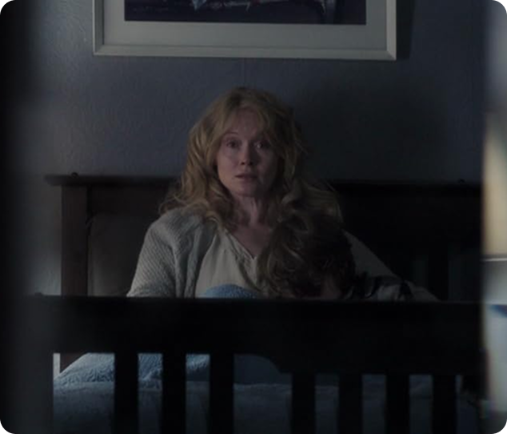
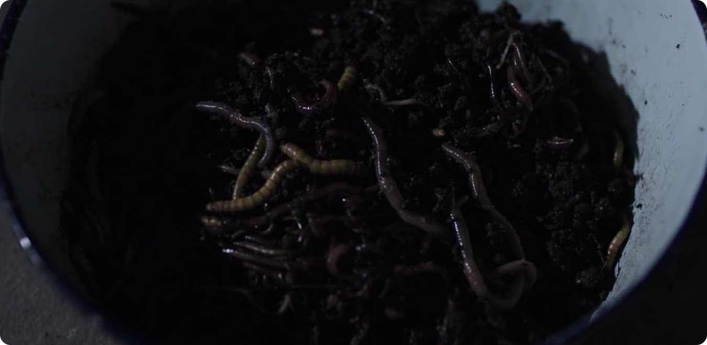
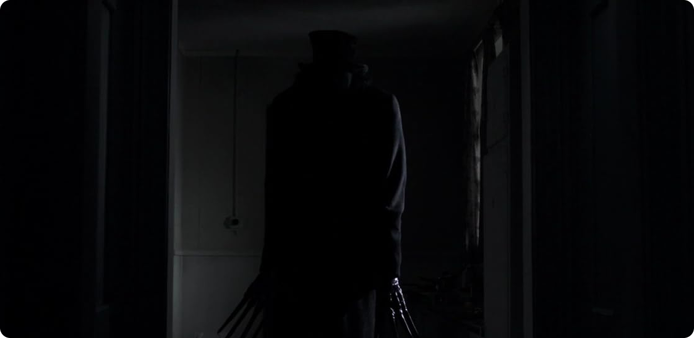
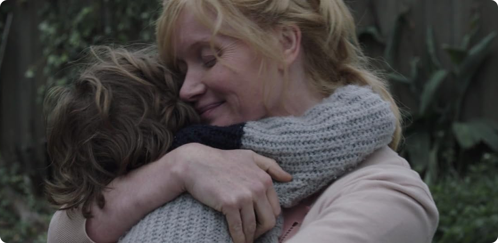

Бабадук как воплощение вытесненного
С самого начала фильм показывает, что источник ужаса находится не снаружи. Бабадук появляется в тот момент, когда героиня сталкивается с накопленной болью:
- смерть мужа;
- хроническое истощение;
- подавленные эмоции.


Важно, что эти переживания не проговариваются и не проживаются. Они вытесняются, а значит — продолжают существовать в искажённой форме. Бабадук становится визуализацией того, что было загнано внутрь.
Попытка уничтожить проблему
На протяжении фильма героиня пытается «избавиться» от монстра любыми способами. Она игнорирует, отрицает и, в конце концов, пытается взять ситуацию под контроль. Но чем сильнее она сопротивляется, тем мощнее становится Бабадук. Это отражает реальный психологический механизм: подавленные эмоции не исчезают, а усиливаются. Попытка их уничтожить только увеличивает напряжение.
Потеря контроля и слияние
Кульминация фильма показывает момент, когда граница между героиней и монстром исчезает. Это не просто одержимость, а состояние, в котором вытесненное полностью захватывает сознание.

Здесь важно, что Бабадук не приходит извне, он становится частью поведения героини. Агрессия, раздражение, жестокость — всё то, что было подавлено, выходит наружу без фильтра.

Принятие вместо победы

Финал фильма принципиально отказывается от классической логики хоррора. Монстра не уничтожают — его помещают в подвал и продолжают «кормить». Это ключевой момент:
- проблема не исчезает;
- она остаётся частью жизни;
- но больше не управляет поведением.
Подвал становится символом осознанного контроля. Героиня признаёт существование своей боли и учится с ней сосуществовать.
Почему это важно
Фильм предлагает важную идею: некоторые состояния невозможно «исправить» или «стереть». Травма, утрата, подавленные эмоции не исчезают полностью. Попытка их уничтожить приводит к разрушению. Единственный выход — признать их существование и встроить в свою жизнь.

Вывод
«Бабадук» разрушает привычную модель борьбы с монстром. Здесь победа — это не уничтожение, а контроль. Монстр остаётся, потому что он неотделим от внутреннего опыта.

И именно это делает фильм по‑настоящему тревожным: он показывает, что от некоторых вещей невозможно избавиться — можно только научиться жить с ними.